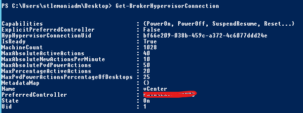

Introduction
During a migration lasting several months and requiring to provision on a regular basis new VDI, I had to create several times a week new machines in two different MCS catalogs (one in each of our datacenters) in order to add them to the delivery group and have more.
It is actually not a “big deal” but each time I face a task I have to do several times a day, a week, a month, I try to automatize it in PowerShell, even if it is something that requires less than a minute to do so. We never know which difficulty we may face during the scripting phase and there is always something new to learn, either about writing the script or about the infrastructure itself.
To be fair, I first thought a Citrix cmdlet would have offer a simple way to provision new VMs in an MCS catalog (I never gave a look at the PowerShell’s tab in the Studio). But it was not the case and provisioning new VMs requires actually a few steps in order to complete such task. And as my most preferred assistant did not find something really dynamic, and I mean in the target delivery group, the number of VMs to create, for an existing catalog (some script exist but create the catalog and the delivery group from scratch), I had to do it on my own. Such a shame, right? 😊
I first started by doing it through the console, to have the step in mind and to follow them as I was scripting (like to avoid trying to add machines in a delivery group before creating them on hosting side for example…) and also to have some of the commands in this very helpful PowerShell’s tab.
I discovered you must:
- Find the Identity Pool to create machine account on Active Directory
- Create the machine account
- Provision the VM
- Add the VM to the catalog
- And finally add the machine to the delivery group
All these steps are hidden behind the “Add machine” wizard which I never understood why it keeps asking for the naming convention and the target OU prior to the creation of new VMs. I mean, we set this at the catalog’s creation… I could understand the purpose of confirming these parameters but if I want to use another naming convention or OU, I could simply create a new catalog, isn’t it?
Of course, between those steps, there are some parameters to gather to talk to the correct resource (like the Provisioning Scheme or the catalog ID for instance). Adding some steps to complete in order to provision new machines. To be honest, I started to write a script with static IDs only matching my configuration and then, I thought it could help some of you and I worked to have it entirely useable on any infrastructure, based on parameter to provide to the script.
First, I started slowly, create X number of machines in a single catalog and add them a delivery group:
.\VDI_Provisionning.ps1 -VDICount 10 -Catalog "Windows10" -DeliveryGroup "Desktop"
Then, I added the capability to manage several catalogs (remember, we have two datacenters, but it could work with as many as you might want):
.\VDI_Provisionning.ps1 -VDICount 10 -Catalog "DTC1","DTC2" -DeliveryGroup "Desktop"
I thought about a -Split parameter in order to create the same number of VDI in each catalog. It takes the count and divide by the number of catalogs set in parameter (and return a natural number of course for the little smart guy who wanted to try with an odd number) :
.\VDI_Provisionning.ps1 -VDICount 10 -Catalog "DTC1","DTC2" -Split -DeliveryGroup "Desktop"
Finally I added some additional switches to allow the script to be run on a computer that is not a delivery controller and to specify an output file for the log (by default, it transcripts in a file in current directory):
.\ VDI_Provisionning.ps1 -DeliveryController "CTXDDC01" -VDICount 10 -Catalog "Windows10" -DeliveryGroup "Desktop" -Log "C:\temp\test.log"
The script starts by checking all those parameters and the connection with the delivery controller before doing anything. I’d rather spend time to check first than start processing and ending up with some orphaned objects (and having hard time to clean up the mess, sounds like a true story, right? 😰).
Funny thing, it requires more lines to check the parameters than to create the machine! I guess I was dedicated to not break your configuration!
If you give a close look, you may notice the script pauses before adding the VM(s) to the catalog. because I faced some issue when adding the virtual machine to the catalog on one delivery controller and not the other. I then remembered that there is a most preferred delivery controller to talk to the hosting infrastructure:

And when you are not talking to the most preferred one when using Citrix cmdlets, the other delivery controllers could not have up-to-date information before a few seconds. Thus, I added 10 seconds sleep, could have been less but I’d rather to be safe. Also, always first test your script in DEV and then on all your delivery controllers! And once it has done, here is how it looks:
Pretty cool, huh?
“Enough talking! Where is the script?!”
Alright, alright, you’ll find the latest version on Github, feel free to share your comments, your improvment’s ideas or custom it your way!
<#
.Synopsis
Provision a given number of VM(s) in one or more MCS catalog(s) and assign the VM(s) to a delivery group.
.Description
Provision a given number of VM(s).
This script supports to provision in several MCS catalogs.
It also supports to attach the newly created VM(s) to a delivery group (only one is supported).
Finally, you can specify to split equally the VM(s) to provision into different MCS catalogs (optionnal).
.Parameter DeliveryController
Specifiy the Delivery Controller to use for the provision
This parameter is optionnal, by default it will use with the local machine.
.Parameter VDICount
Specify how much VM(s) to provision (integer).
This parameter is mandatory.
.Parameter Catalog
Specify a list of MCS catalogs to provision the VM(s) to.
This parameter is mandatory.
.Parameter Split
Split equally the number of VM(s) to provision into the MCS catalogs provided with -Catalog parameter.
This paramater is optionnal.
.Parameter DeliveryGroup
Specifiy the DesktopGroup to attach to the newly created VM(s).
This parameter is mandatory.
.Parameter Log
Specifiy the output file for the logs.
This parameter is optionnal, by default, it will create a file in the current directory.
.Example
# Provision 10 VMs to the "Windows 10" catalog and assign them to the "Desktop" delivery group.
VDI_Provisionning.ps1 -VDICount 10 -Catalog "Windows10" -DeliveryGroup "Desktop"
.Example
# Connect to "CTXDDC01" to provision 10 VMs to the "Windows 10" catalog and assign them to the "Desktop" delivery group.
VDI_Provisionning.ps1 -DeliveryController "CTXDDC01" -VDICount 10 -Catalog "Windows10" -DeliveryGroup "Desktop"
.Example
# Provision 10 VMs to the "DTC1" and "DTC2" catalogs and assign them to the "Desktop" delivery group.
VDI_Provisionning.ps1 -VDICount 10 -Catalog "DTC1","DTC2" -DeliveryGroup "Desktop"
.Example
# Provision 5 (10 split equally between two catalogs) VMs to the "DTC1" and "DTC2" catalogs, assign them
to the "Desktop" delivery group and log the output in C:\Temp
VDI_Provisionning.ps1 -VDICount 10 -Catalog "DTC1","DTC2" -Split -DeliveryGroup "Desktop" -Log "C:\temp\test.log"
#>
[CmdletBinding()]
Param(
# Declaring input variables for the script
[Parameter(Mandatory=$false)] [string]$DeliveryController,
[Parameter(Mandatory=$true)] [int]$VDICount,
[Parameter(Mandatory=$true)] [string[]]$Catalog,
[Parameter(Mandatory=$false)] [switch]$Split,
[Parameter(Mandatory=$true)] [string]$DeliveryGroup,
[Parameter(Mandatory=$false)][ValidateNotNullOrEmpty()] [string]$LogFile=".\VDI_Provisionning.log"
)
#Start logging
Start-Transcript -Path $LogFile
#Setting variables prior to their usage is not mandatory
Set-StrictMode -Version 2
#Check Snapin can be loaded
#Could be improved by only loading the necessary modules but it would not be compatible with version older than 1912
Write-Host "Loading Citrix Snapin... " -NoNewline
if(!(Add-PSSnapin Citrix* -ErrorAction SilentlyContinue -PassThru )){
Write-Host "Failed" -ForegroundColor Red
Write-Host "Citrix Snapin cannot be loaded. Please, check the component is installed on the computer." -ForegroundColor Red
#Stop logging
Stop-Transcript
break
}
Write-Host "OK" -ForegroundColor Green
################################################################################################
#Checking the parameters
################################################################################################
#Check if the DeliveryController parameter is set or if it has to use the local machine
if($DeliveryController){
#Check if the parameter is a FQDN or not
Write-Host "Trying to contact the Delivery Controller $DeliveryController... " -NoNewline
if($DeliveryController -contains "."){
$DDC = Get-BrokerController -DNSName "$DeliveryController"
} else {
$DDC = Get-BrokerController -DNSName "$DeliveryController.$env:USERDNSDOMAIN"
}
} else {
Write-Host "Trying to contact the Delivery Controller $env:COMPUTERNAME... " -NoNewline
$DDC = Get-BrokerController -DNSName "$env:COMPUTERNAME.$env:USERDNSDOMAIN"
}
if(($DDC)){
Write-Host "OK" -ForegroundColor Green
} else {
Write-Host "Failed" -ForegroundColor Red
Write-Host "Cannot contact the Delivery Controller. Please, check the role is installed on the target computer and your account is allowed to communicate with it." -ForegroundColor Red
}
#Check if the catalog(s) exist(s)
$errorcount = 0
$catalogcount = 0
foreach($cat in $Catalog){
$catalogcount++
Write-Host "Checking the catalog $cat... " -NoNewline
if(Get-BrokerCatalog -AdminAddress $DeliveryController -Name $cat -ErrorAction Ignore){
Write-Host "OK" -ForegroundColor Green
Write-Host "Is it an MCS catalog? " -NoNewline
if((Get-BrokerCatalog -AdminAddress $DeliveryController -Name $cat).ProvisioningType -eq "MCS"){
Write-host "Yes" -ForegroundColor Green
} else {
Write-Host "No" -ForegroundColor Red
Write-Host "$cat is not an MCS catalog." -ForegroundColor Red
$errorcount++
}
} else {
Write-Host "Failed." -ForegroundColor Red
Write-Host "Cannot find catalog $cat." -ForegroundColor Red
$errorcount++
}
}
#If one or more catalog(s) got an error, stop processing
if($errorcount -ne 0){
Write-Host "One of the catalog does not exist or is not an MCS catalog. Please, check there is no mistype, the catalog(s) exist(s), or it is an MCS catalog before continuing." -ForegroundColor Red
Stop-Transcript
break
}
#Check if the VDICount can be split equally when -Split is set
if($Split){
$continue = ""
Write-Host "Checking VDICount can be split equally between the catalogs... " -NoNewline
if($VDICount%$catalogcount){
Write-Host "No" -ForegroundColor Yellow
while ($continue -notlike "y" -and $continue -notlike "n") {
$continue = Read-Host "VDICount cannot be split equally between the catalogs. Do you want to continue and split unevenly between the catalogs? Y/N"
}
if($continue -match "y"){
$VDICount = [math]::Floor($VDICount/$catalogcount)
Write-Host "Based on the parameter and the number of catalogs, $VDICount VM(s) will be created in each catalog." -ForegroundColor Yellow
$continue = "" #reset continue for next question
while ($continue -notlike "y" -and $continue -notlike "n") {
$continue = Read-Host "Do you want to continue? Y/N"
}
if($continue -notmatch "y"){
Write-Host "Execution ended by the user." -ForegroundColor Yellow
Stop-Transcript
break
}
} else {
Write-Host "Execution ended by the user." -ForegroundColor Yellow
Stop-Transcript
break
}
} else {
Write-Host "OK" -ForegroundColor Green
}
}
#Check if the Delivery Group exists
Write-Host "Checking the Delivery Group $DeliveryGroup..." -NoNewline
if(Get-BrokerDesktopGroup -AdminAddress $DeliveryController -Name $DeliveryGroup -ErrorAction Ignore){
Write-Host "OK" -ForegroundColor Green
} else {
Write-Host "Failed." -ForegroundColor Red
Write-Host "Cannot find Delivery Group $DeliveryGroup." -ForegroundColor Red
Stop-Transcript
break
}
Write-Host "All the parameters were validated. Continue processing..." -ForegroundColor Green
#reset some variables
$errorcount = 0
$count = 0
################################################################################################
#Let the fun begin
################################################################################################
foreach($cat in $Catalog){
Write-Host "Starting provisionning of $VDICount VM(s) in $cat" -ForegroundColor Yellow
#Find IdentityPool for naming convention, OU settings of the Catalog
Write-Host "Getting IdentityPool... " -NoNewline
$IdentityPool = (Get-AcctIdentityPool -IdentityPoolName $cat).IdentityPoolUid.Guid
Write-Host "$IdentityPool found" -ForegroundColor Green
#Creating the account in AD and in the IndentityPool
Write-Host "Creating account(s)... " -NoNewline
$adAccounts = New-AcctADAccount -Count $VDICount -IdentityPoolUid $IdentityPool -ErrorAction Stop
Write-Host "OK" -ForegroundColor Green
#Creating the VM(s) using the name(s) list from the previous command
Write-Host "Creating the virtual machine(s)... " -NoNewline
$provTaskId = New-ProvVM -AdAccountName @($adAccounts.SuccessfulAccounts) -ProvisioningSchemeName $cat -RunAsynchronously -ErrorAction Stop
#Display a progress bar in case of large number of VMs creation
$provtask = Get-ProvTask -TaskId $provTaskId
$totalpercent = 0
While($provtask.Active -eq $true){
try {
$totalpercent = If ($provTask.TaskProgress) {$provTask.TaskProgress} else {0}
}
catch {
}
Write-Progress -Activity "Tracking progress" -status "$totalPercent% Complete:" -percentComplete $totalpercent
Start-Sleep 3
$provtask = Get-ProvTask -TaskId $provTaskId
}
Write-Host "OK" -ForegroundColor Green
#Get the ProvisioningSchemeUid in ordre to add the VM(s) to the catalog
Write-Host "Getting Provisioning Scheme Uid... " -NoNewline
$ProvSchemeUid = (Get-ProvScheme -ProvisioningSchemeName $cat).ProvisioningSchemeUid.Guid
Write-Host "$ProvSchemeUid found" -ForeGroundColor Green
#Finding the catalog Ui to attached the VM(s) to
Write-Host "Finding Catalog's UId... " -NoNewline
$Uid = (Get-BrokerCatalog -Name $cat).Uid
Write-Host "$Uid found" -ForegroundColor Green
#Listing the newly created VM(s) in order to add to the catalog. "Brokered" tag means the VM is created but not attached
#We are listing those
$ProvVMS = Get-ProvVM -ProvisioningSchemeUid $ProvSchemeUid -MaxRecordCount 10000 | Where-Object {$_.Tag -ne "Brokered"}
Write-Host "Assigning newly created machines to $cat..."
Start-Sleep -Seconds 10 #Adding delay to avoid an error if the Delivery Controller has not up-to-date info (could require a few seconds sometime)
Foreach($VM in $ProvVMS){
$count++
$VMName = $VM.VMName
#Lock the VM to indicate the VM is used (assigned to a catalog)
Write-Host "Locking VM $VMName... " -NoNewline
Lock-ProvVM -ProvisioningSchemeName $cat -Tag "Brokered" -VMID @($VM.VMId) -ErrorAction Stop
Write-Host "OK" -ForegroundColor Green
#Adding the VM to the catalog
Write-Host "Adding VM $VMName to $cat catalog... " -NoNewline
New-BrokerMachine -Cataloguid $Uid -MachineName $VMName -ErrorAction Stop | Out-Null
Write-Host "OK" -ForegroundColor Green
#Adding the VM to the Delivery Group
Write-Host "Adding VM $VMName to $DeliveryGroup delivery group... " -NoNewline
Add-BrokerMachine -MachineName "$env:USERDOMAIN\$VMName" -DesktopGroup $DeliveryGroup -ErrorAction Stop
Write-host "OK" -ForegroundColor Green
}
Write-Host "$count VDI created in $cat and attached to $DeliveryGroup!" -ForegroundColor Green
#Reset variables before next loop, just in case
$adAccounts = $null
$ProvVMS = $null
$count = $null
}
#Stop logging
Stop-Transcript